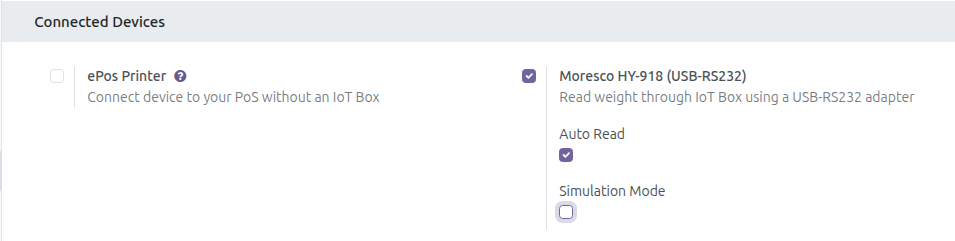
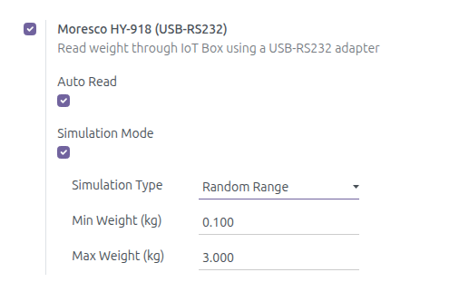

Configuración sencilla
Activa la báscula desde los ajustes del Punto de Venta
Desde Punto de Venta → Configuración → Dispositivos conectados activas la báscula Moresco HY-918 (USB-RS232) y defines sus parámetros: lectura automática del peso, velocidad (baud rate), bits de datos, bits de parada y paridad.

Opciones de la báscula
Activa la lectura automática para que el peso se aplique solo al seleccionar un producto pesable, o habilita el modo simulación para realizar pruebas.


Modo simulación
Configura un peso fijo o un rango aleatorio (mínimo y máximo) para probar el flujo completo sin necesidad de una báscula conectada.